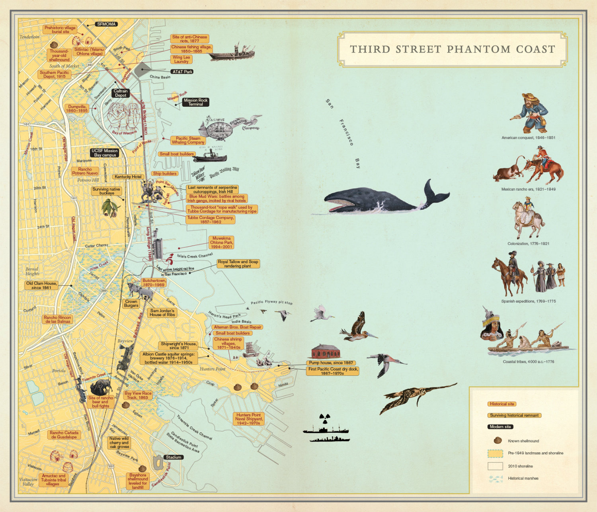

welcome to the official homepage for my digital intervention!
below is my digital intervention proposal in podcast form:
Here is my final digital initiative map, hosted by ESRI using ArcGIS Online

cognitive map above of san fancisco by Rebecca Silnot